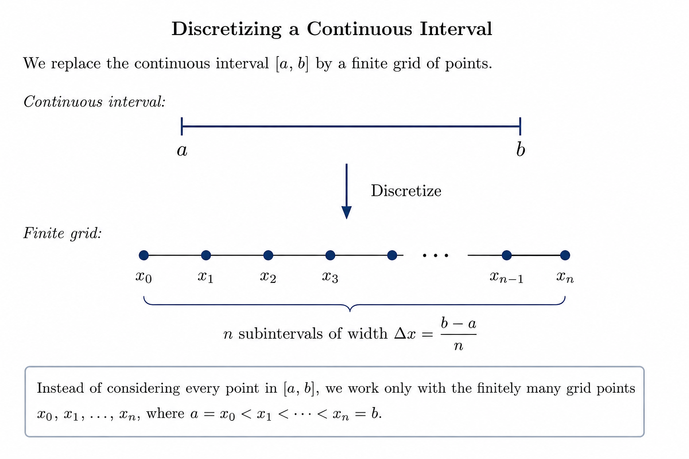

Real Analysis
COURSE NOTES / MATH 400
Real Analysis
17 August 2026
Major Themes in this Course
Differential Equations and Approximation
Differential equations describe how physical systems evolve, but many cannot be solved exactly. Instead, we approximate their solutions numerically by discretizing (approximating) space, time, or both.
For example, rather than considering every point in a continuous interval, we may replace the interval by a finite grid:

The differential equation is then replaced by a finite collection of computations on these grid points.
This immediately raises two important questions.
1. Does the approximation converge?
As the grid becomes finer, we want the numerical solution to approach the true solution.
If the numerical scheme does not converge, increasing the resolution does not necessarily make the simulation more accurate. In that case, we have no guarantee that the computation represents the actual system. Back to the drawing board.
2. How fast does it converge?
Knowing that an approximation eventually converges is not always enough. In practice, we also need to understand its rate of convergence.
A faster-converging method may achieve a desired accuracy using relatively few grid points, while a slower method may require much greater computational effort.
Balance:
\[ \text{too coarse} \quad\longrightarrow\quad \text{insufficient accuracy} \] \[ \text{too fine} \quad\longrightarrow\quad \text{unnecessary computation} \]
Information about convergence therefore tells us both whether an approximation is trustworthy and how much computation is needed to make it useful.
This same issue appears throughout applied mathematics, including statistics, probability, machine learning, and numerical modeling: whenever we approximate something that cannot be computed exactly, we need to know whether the approximation approaches the object we actually care about.
Messy Cases
Much of calculus is developed using functions and sequences that behave nicely. Real analysis asks what happens when we stop assuming that everything behaves nicely.
Infinite processes in particular can violate intuitions developed from finite arithmetic and geometry.
For example:
Riemann Rearrangement Theorem
For a finite sum, changing the order of addition does not change the answer:
\[ a+b+c=c+a+b. \]
It is therefore tempting to assume that the same must be true for an infinite series.
Surprisingly, this can fail.
Suppose
\[ \sum_{n=1}^{\infty} a_n \]
converges, but does not converge absolutely:
\[ \sum_{n=1}^{\infty}|a_n|=\infty. \]
Such a series is called conditionally convergent.
The Riemann Rearrangement Theorem says that for any
\[ x\in\mathbb{R}\cup{-\infty,+\infty}, \]
there exists some rearrangement \((b_n)\) of the terms \((a_n)\) such that
\[ \sum_{n=1}^{\infty}b_n=x. \]
A standard example is the alternating harmonic series,
\[ 1-\frac12+\frac13-\frac14+\frac15-\frac16+\cdots. \]
This series converges, but
\[ 1+\frac12+\frac13+\frac14+\cdots \]
diverges, so the convergence is conditional rather than absolute.
Consequently, rearranging the terms of the alternating harmonic series can change its sum. With a suitable rearrangement, we can make the series converge to a different real number or even diverge.
The important lesson is that
\[ \boxed{\text{finite intuition does not always extend to infinite processes.}} \]
Pairwise addition is commutative, but an infinite sequence of additions requires more care.
The Rational Numbers Take Up Almost No Room
The rational numbers \(\mathbb{Q}\) are dense in \(\mathbb{R}\). Between any two distinct real numbers, there is a rational number.
Equivalently, every real number is arbitrarily close to some rational number.
This makes \(\mathbb{Q}\) seem enormous: rational numbers occur everywhere on the real line.
Nevertheless, \(\mathbb{Q}\) has measure zero.
Informally, this means that the rational numbers collectively take up essentially no length.
More precisely, for every \(\varepsilon>0\), it is possible to find a countable collection of intervals
\[ (a_1,b_1),(a_2,b_2),(a_3,b_3),\ldots \]
that covers every rational number,
\[ \mathbb{Q} \subseteq \bigcup_{n=1}^{\infty}(a_n,b_n), \]
while the total length of all the intervals satisfies
\[ \sum_{n=1}^{\infty}(b_n-a_n)<\varepsilon. \]
The value of \(\varepsilon\) can be as small as we like.
For example, we could require
\[ \sum_{n=1}^{\infty}(b_n-a_n) < \frac{1}{1{,}000{,}000}, \]
and still cover every rational number.
This separates two ideas that initially seem related:
\[ \boxed{\text{dense} \neq \text{large in measure}.} \]
A set can occur arbitrarily close to every point of the real line while still having total measure zero.
Banach–Tarski Paradox
The Banach–Tarski Paradox gives an even more dramatic example of the failure of ordinary geometric intuition.
A solid ball in \(\mathbb{R}^3\) can be partitioned into finitely many extremely complicated sets. Those pieces can then be moved using rigid motions and reassembled into a ball of a different size.
For example, in principle one can begin with a unit ball and reassemble the pieces into a ball of radius \(1000\).
The pieces involved are not ordinary physical pieces. They are highly pathological sets, and the result is not a statement about something we could perform with physical matter.
Instead, the paradox exposes a limitation on the mathematical notion of volume.
Suppose we tried to assign a volume to every subset of \(\mathbb{R}^3\) while requiring volume to behave as expected under rigid motions and finite disjoint unions.
The Banach–Tarski construction would force the same pieces to have total volume equal to both the original ball and the much larger reconstructed ball.
Therefore,
\[ \boxed{ \text{not every subset of }\mathbb{R}^3 \text{ can be assigned a sensible volume.} } \]
This is one reason measure theory distinguishes between measurable and non-measurable sets.
How Relevant Are Infinities?
These examples may seem removed from applications because they involve infinite processes, pathological sets, or arbitrarily small quantities.
But infinity is often useful precisely because it allows us to understand large finite systems more easily.
In many applications,
\[ \text{infinite} \approx \text{finite but extremely large}. \]
We often replace a difficult finite problem with an idealized infinite or continuous one, analyze that cleaner mathematical object, and then return to a finite approximation for computation.
Numerical work can therefore involve two directions of approximation:
\[ \text{large finite system} \longrightarrow \text{idealized infinite/continuous model} \longrightarrow \text{finite numerical approximation}. \]
The infinite model is not introduced merely to make the problem more abstract. It can make the underlying structure easier to understand.
This is why limits, arbitrarily small quantities, and arbitrarily large quantities are central to analysis: they allow us to replace vague ideas such as
“very large,” “very small,” and “very close”
with mathematical statements that can be proved.
Mathematical Guarantees
The goal of real analysis is not simply to develop intuition about convergence, continuity, differentiation, and integration.
We want guarantees.
A mathematical theorem should apply to every object satisfying its hypotheses, including cases we did not think to test individually.
To obtain those guarantees, we need two major tools:
- good definitions, and
- proofs.
A good definition draws the boundary around exactly the objects we intend to describe.
A proof then establishes that a claim holds throughout that entire boundary.
Thus,
\[ \text{precise definitions} + \text{proofs} \longrightarrow \text{mathematical guarantees}. \]
Why Definitions Matter
Writing a good mathematical definition is surprisingly difficult because precision and intuition are not always the same thing.
Consider the informal statement:
A sequence converges to \(L\) if its terms get closer and closer to \(L\).
This sounds reasonable, but it does not quite capture what convergence means.
For example,
\[ a_n=1+\frac1n \]
gets progressively closer to \(0\) in the sense that its distance from \(0\) decreases:
\[ 2,\frac32,\frac43,\frac54,\ldots \]
Yet
\[ a_n\not\to0. \]
Instead,
\[ a_n\to1. \]
Conversely, the constant sequence
\[ 0,0,0,0,\ldots \]
converges to \(0\), even though its terms do not become progressively closer to \(0\): they are already there.
So “gets closer and closer” is simultaneously too broad in some cases and too narrow in others.
The formal definition avoids these problems:
\[ a_n\to L \]
if and only if
\[ \forall\varepsilon>0,\ \exists N\in\mathbb{N} \text{ such that } n\ge N \implies |a_n-L|<\varepsilon. \]
Notice what the definition actually demands.
It does not require the distance
\[ |a_n-L| \]
to decrease at every step.
It requires something stronger and more useful:
No matter how small a neighborhood we place around \(L\), eventually every remaining term of the sequence stays inside it.
The definition is less immediately intuitive than “gets closer and closer,” but it is precise, checkable, and robust enough to handle the messy cases that informal intuition misses.
Proof Hygiene
We handle messy cases with careful definitions and proofs.
A proof is the report of a successful search, not the transcript of one.
A proof must first be correct, but correctness is only the minimum requirement.
A strong proof should also make the mechanism of the argument visible.
Every statement should be load-bearing
For each sentence or calculation in a proof, ask:
Does anything later in the argument depend on this?
If the answer is no, the statement probably does not belong in the final proof.
A fact can be completely correct and still weaken a proof if it does not contribute to the conclusion.
Unnecessary statements:
- increase the amount the reader must process;
- interrupt the logical flow;
- obscure which ideas actually produce the conclusion;
- make the argument harder to reuse in other problems.
Proof writing is therefore not a record of everything discovered while solving the problem.
Scratch work may contain false starts, unnecessary cases, calculations that ultimately went nowhere, and observations that turned out not to matter.
Those may be useful during the search for a proof, but they should usually disappear from the final presentation.
Avoid unnecessary cases
Casework should be introduced only when the argument genuinely depends on the distinction between the cases.
Suppose an argument divides possibilities according to whether \(q\) is even or odd. If the proof inside both cases never actually uses the parity of \(q\), then that distinction was unnecessary.
This gives a useful diagnostic:
\[ \boxed{ \text{If a case never uses the condition defining it, the case probably was not needed.} } \]
Make the mechanism visible
The best proofs do more than verify that a statement is true. They show why it must be true.
For example, the irrationality proof for \(\sqrt{3}\) works because of an incompatibility:
\[ \sqrt3=\frac pq \quad\Longrightarrow\quad 3\mid p \quad\text{and}\quad 3\mid q, \]
but the fraction was chosen so that
\[ \gcd(p,q)=1. \]
Those two requirements cannot simultaneously hold.
That is the mechanism of the proof.
Once the mechanism is visible, the argument becomes reusable. We can immediately ask whether the same strategy works for
\[ \sqrt5,\qquad \sqrt7,\qquad \sqrt p \]
for a prime \(p\), and eventually investigate the more general question of when \(\sqrt n\) is irrational.
Precision vs. Intuition
A good proof should:
- be precise in scope — neither broader nor narrower than the claim requires;
- be logically complete and independently verifiable;
- contain no unnecessary steps, cases, or assumptions;
- make the underlying mechanism of the argument clear and generalizable;
- omit failed approaches and irrelevant intermediate reasoning;
- ensure that every statement contributes directly to the argument.
Thus,
\[ \boxed{\text{Correct} \neq \text{done}.} \]
The final goal is an argument another person can
\[ \boxed{\text{follow} \quad+\quad \text{check} \quad+\quad \text{reuse}.} \]
Example Proof: \(\sqrt{3}\) is Irrational
Claim. \(\sqrt{3}\) is irrational.
Proof. Suppose, for contradiction, that \(\sqrt{3}\) is rational. Then we may write
\[ \sqrt{3}=\frac pq, \]
where \(p,q\in\mathbb{Z}\), \(q\neq0\), and
\[ \gcd(p,q)=1. \]
Squaring gives
\[ 3q^2=p^2. \]
Therefore,
\[ 3\mid p^2. \]
Since \(3\) is prime, \(3\mid p\). Thus for some \(n\in\mathbb Z\),
\[ p=3n. \]
Substituting gives
\[ 3q^2=9n^2, \]
so
\[ q^2=3n^2. \]
Hence
\[ 3\mid q^2, \]
and therefore \(3\mid q\).
Thus \(3\) divides both \(p\) and \(q\), contradicting
\[ \gcd(p,q)=1. \]
Therefore,
\[ \boxed{\sqrt3\notin\mathbb Q}. \]